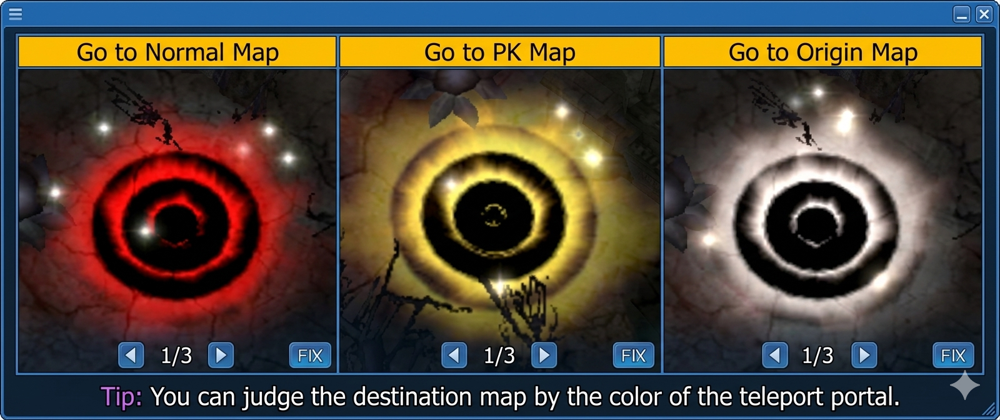

MVP-System (Ragnarok Online: Paradise)
Der MVP ist der regionale Herrscher von Ragnarok Online: Paradise — die Spitze der Schwierigkeitsskala. Mit jedem Update lernt er dazu und wird stärker. Dieser Guide erklärt Spawn-Maps, Missionen, Belohnungen und exklusive Systeme.
👹 MVP-Einführung
Der MVP, der regionale Herrscher von Ragnarok Online: Paradise, erscheint als Höhepunkt der Spielschwierigkeit und wird mit jedem Content-Update kontinuierlich stärker. Die zugehörigen Systeme gliedern sich in folgende Kategorien:
- Exklusive Spawn-Maps
- Exklusive Vernichtungs- & Unterwerfungs-Missionen
- Exklusive Belohnungserwerbs-Methoden
- Weitere exklusive Systeme: Battle Dolls, Weapon-Enhancement-Abilities
🗺️ Exklusive Spawn-Maps
In Paradise bewohnen MVPs eigene, exklusive Habitate. Diese unterteilen sich in Normal-Habitate und PvP-Habitate. Die Map-Struktur ist identisch mit den regulären Maps, aber es gibt keine Death-Penalty — alle Abenteurer können die MVPs beliebig oft herausfordern und kontinuierlich Erfahrung sammeln.
- Normal-Habitate: Maps, auf denen ausschließlich MVPs spawnen — geeignet für alle Abenteurer, die gemeinsam erkunden wollen.
- PvP-Habitate: Durch die PvP-Mechanik ist die Erkundung in Gilden oder Allianzen empfohlen.

📜 Exklusive Vernichtungs-Mission
Der NPC „Midgard Receptionist – Lucy" (prt_in 45,102) an der Kingdom Guild Recruitment Station vergibt Missionsanfragen an Abenteurer. Beantrage bei Lucy die „[MVP] Extermination Battle Participation Qualification", um die Mission anzunehmen.
Die Mission gilt als abgeschlossen, sobald deine Party den designierten MVP besiegt hat — als Belohnung erhältst du die exklusive „Extermination Reward Box (Normal)".

Austausch-Services bei Lucy
Zusätzlich zu Quest-Applikationen bietet Lucy folgende Umtauschservices an:
- MVP Aura Fragments → Quest Reward Boxes (Normal)
- Blacksmith's Blessing Powder → Blacksmith's Blessing
🎁 Exklusive Belohnungserwerbs-Methoden
- MVP-Finisher (Bounty Box Advanced): Abenteurer, die den MVP erlegen, können die „Bounty Box Reward (Advanced)" aufsammeln, die beim MVP-Tod droppt.
-
Lucy-Quest-Completer (Bounty Box Normal):
Wer die Lucy-Bounty-Quest angenommen hat, kann diese nach dem MVP-Kill abschließen und die „Bounty Box Reward (Normal)" bei Lucy einfordern.
Voraussetzung: Ein Party-Mitglied muss den MVP finishen. Im Moment des Final-Hits muss der Charakter innerhalb der Sichtlinie des MVPs UND am Leben sein — sonst zählt die Quest nicht.
-
Alle Abenteurer im Habitat ([MVP]-Aura):
- Normal-Habitat: ca. 100× „[MVP]-Aura" droppen zufällig über die Map verteilt.
- PK-Habitat: ca. 300× „[MVP]-Aura" droppen zufällig — deutlich höherer Ertrag, dafür PvP-Risiko.

⚙️ Weitere exklusive Systeme
- Battle Dolls (MVP Battle Doll): Exklusive Sammlungs-/Begleit-Items aus den Reward-Boxen — enthalten oft passive Stats oder Kosmetik.
- Weapon-Enhancement-Abilities: MVP-spezifische Upgrade-Mechanik für Paradise-Waffen — Details folgen, sobald das System in Global-Reichweite rückt.
- Smith's Blessing / Blessing Powder: Verwendung im Refine-/Enhancement-Prozess; Powder wird bei Lucy zu fertigen Blessings aufgewertet.
✅ TL;DR
- MVPs spawnen in exklusiven Normal- und PK-Habitaten — keine Death-Penalty, unlimitiert wiederholbar
- Quest-Annahme über Lucy bei
prt_in 45,102 - Drei Belohnungs-Ebenen: Advanced Box (Finisher), Normal Box (Party-Quest), MVP-Aura (alle im Habitat)
- PK-Habitat droppt ~3× so viele Auren wie Normal-Habitat — PvP-Risiko einrechnen
- Lucy tauscht Aura-Fragmente gegen Reward-Boxen und Smith's-Blessing-Powder gegen fertige Blessings